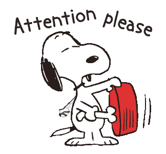

Dans la nature, Bien & mal n’existent pas. L'Univers lui-même n'est ni bon ni mauvais, mais un potentiel en développement permanent.
Dans la vie, il y a 4 types de personnes.
- les gens qui pensent qu'Internet c'est bien
- les gens qui pensent qu'Internet c'est le mal
- les gens qui pensent qu'Internet ce sont des chats
- les gens qui n'y pensent pas

Du point de vue de ce rocher sur Mars, rien ne se soucie de vos problèmes. Là haut, ça n’a pas d’importance, il n'y a aucun "problème", tout est comme cela doit être.
Ici bas, la seule réalité qui soit est celle de notre conscience. Rien n’existe si la conscience ne le pense pas. Rien n’existe non plus si nos sens ne transmettent pas le message. Cela signifie que si nous sentons mal quelque chose, notre réalité change. C’est chose possible car notre perception est limitée: on ne peut pas voir à 360 degrés par exemple. Si nous pensons nos sensations d’une manière ou d’une autre, alors notre réalité change aussi en fonction de la manière. Ainsi, si nous pouvons autant changer notre réalité, alors rien n’est tangible.

Il y a des preuves à cela. Tombez amoureux de quelqu’un et vous aurez une vision quasi divine de cette personne. Sortez de son emprise, cette personne se révèle différente. Pourtant elle n’a pas changé, seulement vous avez changé d’état d’esprit. Tout fonctionne de cette manière : ce n’est pas seulement que vous pouvez activement façonner votre monde de cette manière, c’est que vous le faites passivement, quoi qu’il arrive.

Le rocher sur Mars ne fait pas la différence entre bien et mal, car pour lui, ni l’un ni l’autre n’existent.
Tout est relatif à un point de vue. Ainsi, il n’existe pas de bien ni de mal, car bien et mal sont des valeurs absolues. Si quelque chose est bon d’après quelqu’un et mal d’après quelqu’un d’autre, alors cette chose n’est en elle-même ni bonne, ni mal. Rappelez-vous : d’après ce rocher sur Mars, il n’y a pas de séparation entre bien et mal, les deux n’existent jute pas.
“Est-ce un bien? Est-ce un mal? Je ne sais pas.”
Une histoire chinoise célèbre illustre parfaitement ce propos.

C’est l’histoire d’un fermier qui possède un cheval. Un jour, le cheval s’enfuit. Les villageois s’ameutent à la maison du fermier pour lui remonter le moral.
“Quelle mal chance ! Ton seul cheval ! Nous sommes vraiment désolé pour cette perte, c’est si triste !”
Le fermier répond, “Est-ce un bien? Est-ce un mal? Je ne sais pas.”.
Le jour suivant, le cheval revient avec sept magnifiques juments. Les villageois reviennent pour célébrer la bonne nouvelle.
“Quelle chance incroyable ! Avec huit chevaux, tu es un homme riche ! Tu dois être ravis de cette nouvelle !”
Le fermier répond, “Est-ce un bien? Est-ce un mal? Je ne sais pas.”.
Le jour d’après, le fils du fermier s’occupe de l’entraînement des nouveaux chevaux. Mais l’un d’entre eux s’est révélé agressif; le garçon tombe et se casse la jambe. Les villageois reviennent.
“Pauvre enfant ! Nous sommes si désolé pour ce qui est arrivé ! Nous espérons qu’il s’en remettra bientôt, c’est tellement dommage…”
Le fermier répond, “Est-ce un bien? Est-ce un mal? Je ne sais pas.”.
Le quatrième jour, l’armée arrive au village à la recherche de nouvelles jeunes recrues. Grâce à sa jambe cassée, le fils du fermier échappe au recrutement.
“Quelle nouvelle incroyable ! Ton fils échappera à cette guerre sanglante, il vivra, à tes côtés ! Tu dois être tellement heureux, c’est fantastique !”
Quand bien même, le fermier répond, “Est-ce un bien? Est-ce un mal? Je ne sais pas.”.
En résumé, représentons ce dialogue sous forme de tableau
| Evénement | Bien ou Mal? |
|---|---|
| Perdre son cheval | Cela dépend |
| Gagner 7 chevaux | Cela dépend |
| Le fils se blesse | Cela dépend |
| Evite la guerre | Cela dépend |
Conclusion
Le Bien et le Mal sont des valeurs culturelles et non naturelles. La banane est bonne pour le singe, le singe n'est pas bon pour la banane. N'en faisons donc pas un fromage...